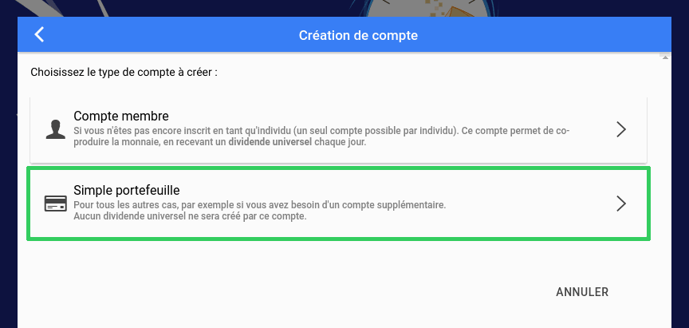

Pour limiter les risques, nous vous conseillons dans un premier temps de créer un compte "Simple portefeuille".
Vous pourrez par la suite créer un compte membre en vous assurant de faire ça de façon parfaitement sécurisée, et utiliser votre compte portefeuille pour envoyer de l'argent rapidement lorsque vous devez vous connecter à votre compte depuis un téléphone (par exemple lors des ğmarchés, notamment ceux qui peuvent avoir lieu pendant les apéros monnaie libre).
Suivez ensuite les étapes indiquées à l'écran.
Choisissez un identifiant qui ne soit pas évident à deviner.
Évitez par exemple de choisir un identifiant construit sur la forme prénomnom.